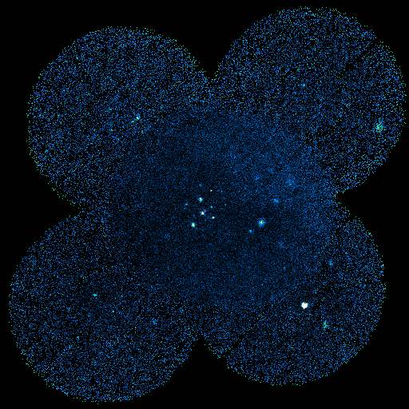

A montage of 6 ROSAT X-Ray satellite Position Sensitive
Proportional Counter (PSPC) images centered on the Corona Australis
molecular cloud. This is an image in soft X-rays, with photon energies
between 0.1 and 2.4 kev. The PSPC has a 2 degree wide field of view; this
image is about 4 degrees on a side. The cluster of X-ray sources near the
center of the image is the R CrA association, a clustering of stars with
ages less than 10 million years. The bright source to the lower right is
the isolated neutron star RXJ 185635-3754. A recent series of
measurements with the Hubble Space Telescope has put this object at only
200 light years from the Sun.